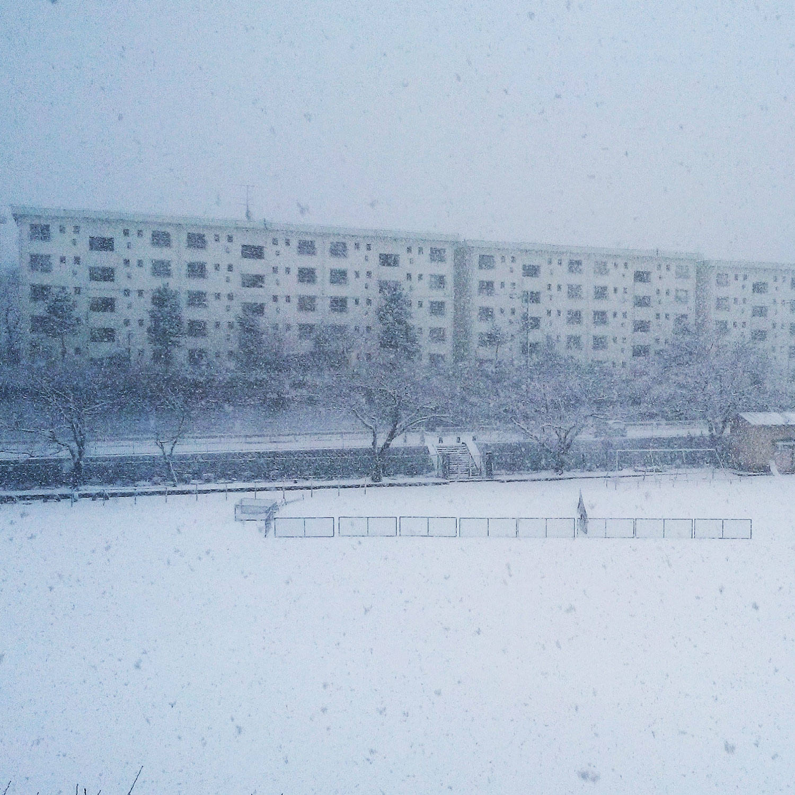

寝坊主 - ground [GNWS-005]
Release Date：2025.03.01
Label：GoodNews
Artwork：Sato Ryuga, 寝坊主
愛媛出身のラッパー寝坊主が新曲「ground」をGoodNewsよりリリース。トラックはGoodNews主宰の一人でもあり、ニューアルバム「緑の太陽の空間」でも話題を集めた新潟出身のミュージシャンtoulaviが務めた。
寝坊主が現在制作中のアルバムからのシングル。toulaviの性急に乱打されるドラムマシンの上で、寝坊主が地元・宇和の記憶を激しくスピットする1曲になっている。
アートワークは、昨年GoodNewsからEP〈baroque〉をリリースしたSato Ryugaと寝坊主が共同で務めた。
・寝坊主コメント
真っ白になった中学校のグランドでひとりで踊っているような曲です。地元にいて何もねえなと思ってた頃の記憶を歌詞にしました。56号線は宇和町、7号線は新潟市に通ってる国道です。いつか新潟に行ってみたい。
・toulaviコメント
地元新潟の気分が重たくなるような曇り空をイメージして作りました。
寝坊主さんの書いた歌詞から、自分が幼少から何度も通ったビデオ屋の空気感を思い出します。
あのビデオ屋、居抜きでエロビデオ専門店になってた。